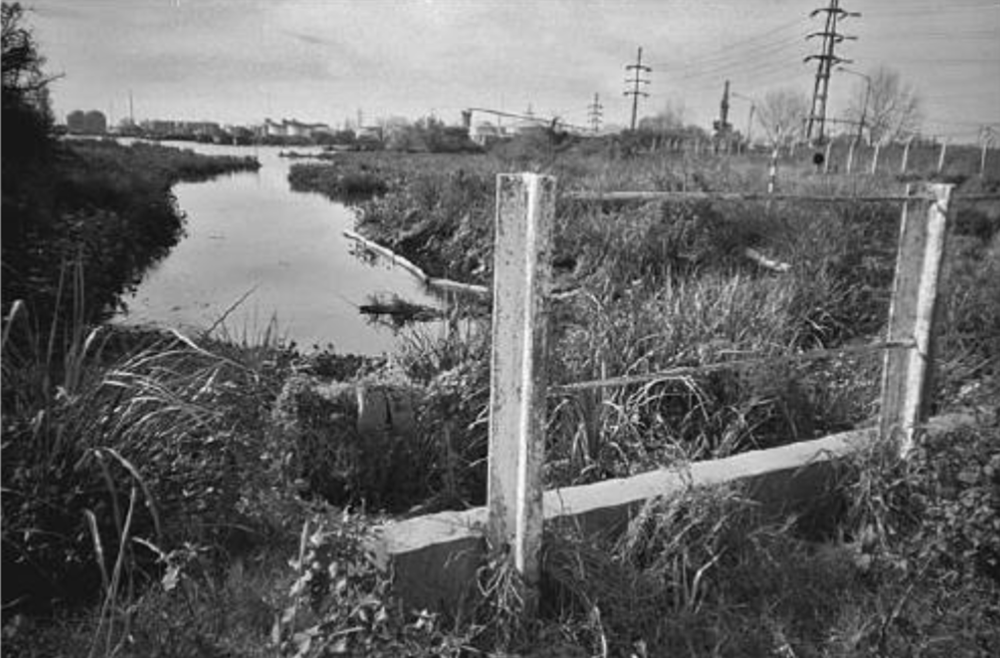
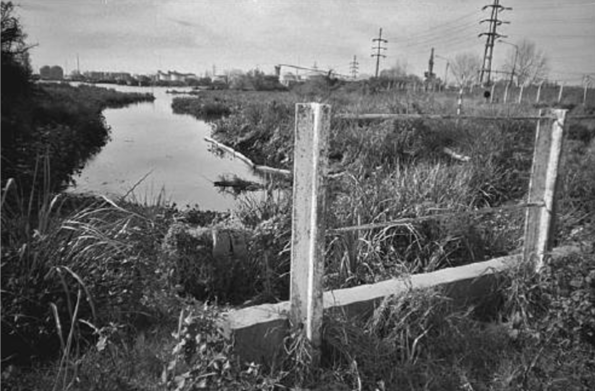

"Este [pantano sucio] es el patio de mi tío".
"Mira esto... todo es barro... está todo contaminado. . . Aquí es donde jugamos".
"En la basura, las ratas parecen monstruos, me dan pesadillas"
"Shell nos está enfermando".
— Samantha (17)
“Mis vecinos cirujean en la basura y hacen mucho dinero.”
"Tengo plomo adentro. . . . Me hicieron un análisis de sangre porque unos abogados dijeron que nos iban a ayudar".
— Manuela (16)
"Me gustaría irme porque aquí está todo contaminado. No sé cuánto plomo tiene mi primo en la sangre... todos mis primos tienen plomo adentro"
— Laura
Las cosas buenas de nuestra comunidad...
El Centro de Salud: "Ahí hay una ambulancia y te atienden muy bien... Si pasa algo, puedes ir allí y te tratan muy bien".
El edificio de la escuela: “El edificio de la escuela se está derrumbando. Es un maldito frío en el invierno, no podemos asistir a clases debido al frío. Si enciende la calefacción, las luces se apagan. Y en nuestro aula hay una ventana rota; nos recagamos del frío”.
El Centro de Salud: "Ahí hay una ambulancia y te atienden muy bien... Si pasa algo, puedes ir allí y te tratan muy bien".
El edificio de la escuela: “El edificio de la escuela se está derrumbando. Es un maldito frío en el invierno, no podemos asistir a clases debido al frío. Si enciende la calefacción, las luces se apagan. Y en nuestro aula hay una ventana rota; nos recagamos del frío”.
Las cosas malas de nuestra comunidad...
"No nos gusta ninguna de estas fotos porque hay mucha contaminación, mucha basura...Me gusta el barrio, todos mis amigos están aquí. Pero no me gusta la contaminación".
"Esta es la calle donde vive Yesica".
"Y esto está frente a su casa".
"Esto está justo en frente de nuestra casa. Hay un hombre viviendo allí, pobrecito... Sientes lástima por él. Las ratas están por todas partes".
"Este es el patio de mi tía".
"Este es mi patio ".

"Cuando pasas por ahí, el hedor te mata... Puedes ver las ratas allí, son enormes, como monstruos...Mira el río... todo está contaminado . . . Ojalá el barrio estuviera más limpio".
"Aquí es donde jugamos al fútbol (en las clases de gimnasia). . . . Ojalá estuviera más limpio".
"Mira a este gato... Está buscando algo para comer. Es un gato ciruja."
"No nos gustan las fábricas por todo el humo".
"Todo esto está contaminado. Todo viene de Shell".
"No me gusta Shell porque trae contaminación... No sé cuánto plomo llevamos en la sangre".
"La planta de concha es realmente genial. . . lleno de camiones." - Miguel
"Está feo adentro, máquinas, humo, mucho humo." - Carolina, quien toma una clase en la planta
“No me gusta Shell-Capsa porque por la noche sale mucho humo. Una vez fuimos a visitar. Nos trataron muy bien, pero contaminan todo. . . Frente a mi casa, hay una mujer que vino a vivir al barrio con su hija. Después de un par de años, todos estaban contaminados debido a la coca-cola. . . . La mayoría de las personas están contaminadas por eso”. - Romina
"Acá hay mucha enfermedad" -Samantha
"Estos cables transportan muchos vatios. Me han dicho que son muy peligrosos. Traen cáncer de piel". - Miguel
"Esta imagen muestra lo que no nos gusta. La planta de coque, los cables". - Nicolás
Dock Oil (fábrica abandonada): "Ahí es donde murió uno de nuestros compañeros de clase".
"No nos gusta ninguna de estas fotos porque hay mucha contaminación, mucha basura...Me gusta el barrio, todos mis amigos están aquí. Pero no me gusta la contaminación".
"Esta es la calle donde vive Yesica".
"Y esto está frente a su casa".
"Esto está justo en frente de nuestra casa. Hay un hombre viviendo allí, pobrecito... Sientes lástima por él. Las ratas están por todas partes".
"Este es el patio de mi tía".
"Este es mi patio ".

"Cuando pasas por ahí, el hedor te mata... Puedes ver las ratas allí, son enormes, como monstruos...Mira el río... todo está contaminado . . . Ojalá el barrio estuviera más limpio".
"Aquí es donde jugamos al fútbol (en las clases de gimnasia). . . . Ojalá estuviera más limpio".
"Mira a este gato... Está buscando algo para comer. Es un gato ciruja."
"No nos gustan las fábricas por todo el humo".
"Todo esto está contaminado. Todo viene de Shell".
"No me gusta Shell porque trae contaminación... No sé cuánto plomo llevamos en la sangre".
"La planta de concha es realmente genial. . . lleno de camiones." - Miguel
"Está feo adentro, máquinas, humo, mucho humo." - Carolina, quien toma una clase en la planta
“No me gusta Shell-Capsa porque por la noche sale mucho humo. Una vez fuimos a visitar. Nos trataron muy bien, pero contaminan todo. . . Frente a mi casa, hay una mujer que vino a vivir al barrio con su hija. Después de un par de años, todos estaban contaminados debido a la coca-cola. . . . La mayoría de las personas están contaminadas por eso”. - Romina
"Acá hay mucha enfermedad" -Samantha
"Estos cables transportan muchos vatios. Me han dicho que son muy peligrosos. Traen cáncer de piel". - Miguel
"Esta imagen muestra lo que no nos gusta. La planta de coque, los cables". - Nicolás
Dock Oil (fábrica abandonada): "Ahí es donde murió uno de nuestros compañeros de clase".